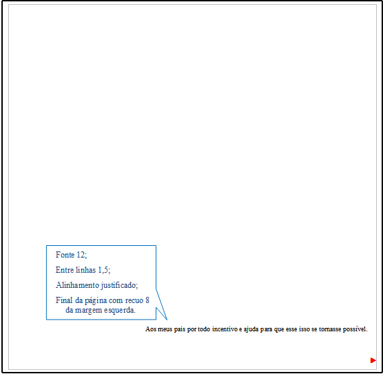
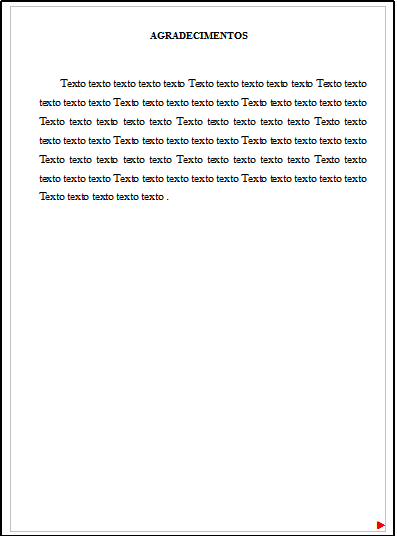
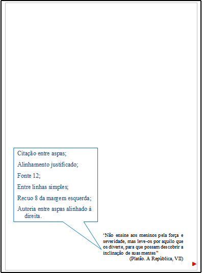
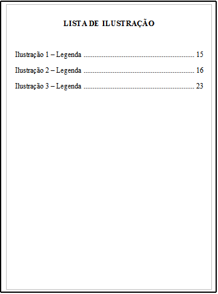
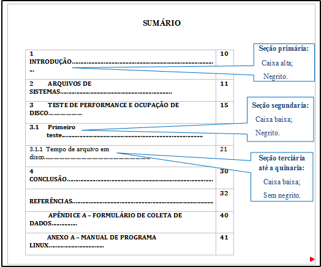
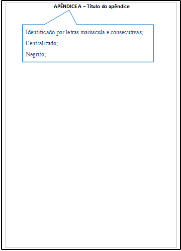
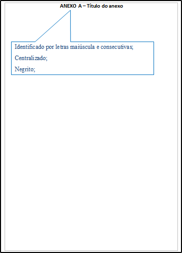

Contém os dados da publicação e deve ser impressa no verso da folha de rosto e elaborado pelo profissional bibliotecário do Campus.
Atenção
É uma lista de erros ocorrido no texto seguidos de suas correções. Deve ser inserida logo após a folha de rosto, constituída pela referência do trabalho e pelo texto da errata. Apresentada em papel avulso ou encartado, acrescida ao trabalho depois de impresso.

Texto em que o autor presta homenagem ou dedica seu trabalho.
PS:Não utilizar o título “Dedicatória” no topo da página.
Texto em que o autor faz agradecimentos dirigidos àqueles que contribuíram de maneira relevante à elaboração do trabalho.
Texto em que o autor apresenta uma citação, seguida de indicação de autoria, relacionada com a matéria tratada no corpo texto.
PS:Não utilizar o título “Epígrafe” no topo da página.
Quanto a sua extensão os resumos devem ter: de 150 a 500 palavras os de trabalhos acadêmicos (teses, dissertações e outros) e relatórios técnico-científicos;
Elaborada de acordo com a ordem apresentada no texto, com cada item designado por seu nome específico, travessão, título e respectivo número da folha ou página.
Quando necessário, recomenda-se a elaboração de lista própria para cada tipo de ilustração (desenhos, esquemas, figuras, fluxogramas, fotografias, gráficos, mapas, organogramas, plantas, quadros, retratos e outras).
Consiste na relação alfabética das abreviaturas e siglas utilizadas no texto, seguidas das palavras ou expressões correspondentes grafadas por extenso. Recomenda-se a elaboração de lista própria para cada tipo.
Elaborada de acordo com a ordem apresentada no texto, com o devido significado.
A palavra sumário deve ser centralizada e com o mesmo tipo de fonte utilizada para as seções primárias.
A subordinação dos itens do sumário seja destacada com a mesma apresentação tipográfica (fonte, negrito, caixa alta, caixa baixa, etc.) utilizada nas seções do documento. Em seguida linha pontilhada e paginação inicial de cada seção e subseção.
Alinhar a margem do título a partir do indicativo mais extenso, inclusive os elementos pós-textuais.
Obs: Os elementos pré-textuais não podem constar no sumário.
As seções dos elementos pós-textuais não são enumeradas.
OBS: Seções primárias sempre iniciar em página ímpar (anverso), na parte superior da mancha gráfica, e ser separados do texto que os sucede por um espaço entre linhas de 1,5.
Relação em ordem alfabética de palavras ou expressões técnicas de uso restrito ou de sentido obscuro, utilizadas no texto, acompanhadas das respectivas definições.
Texto ou documento elaborado pelo autor, a fim de complementar sua argumentação.
Deve ser precedido pela palavra “APÊNDICE” e identificado por letras maiúsculas e consecutivas (APÊNDICE A; APÊNDICE B; APÊNDICE C, etc).
Texto ou documento não elaborado pelo autor, que serve de fundamentação, comprovação e ilustração.
Devem-se ser identificados por letras maiúsculas e consecutivas (ANEXO A; ANEXO B; ANEXO C, etc).
Lista de palavras ou frases, ordenadas segundo determinado critério, que localiza e remete para as informações contidas no texto.